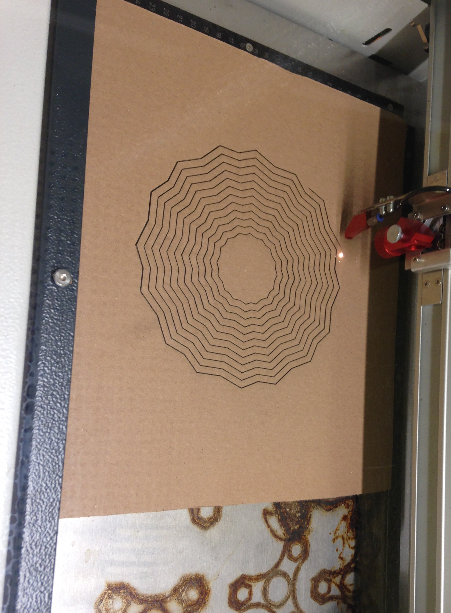
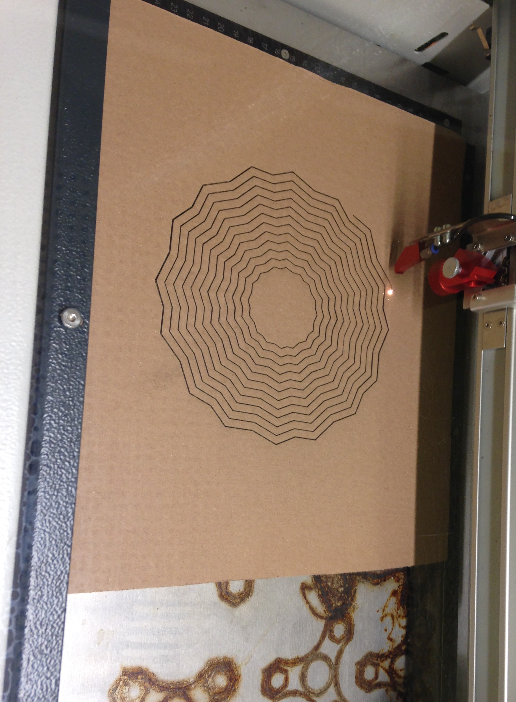
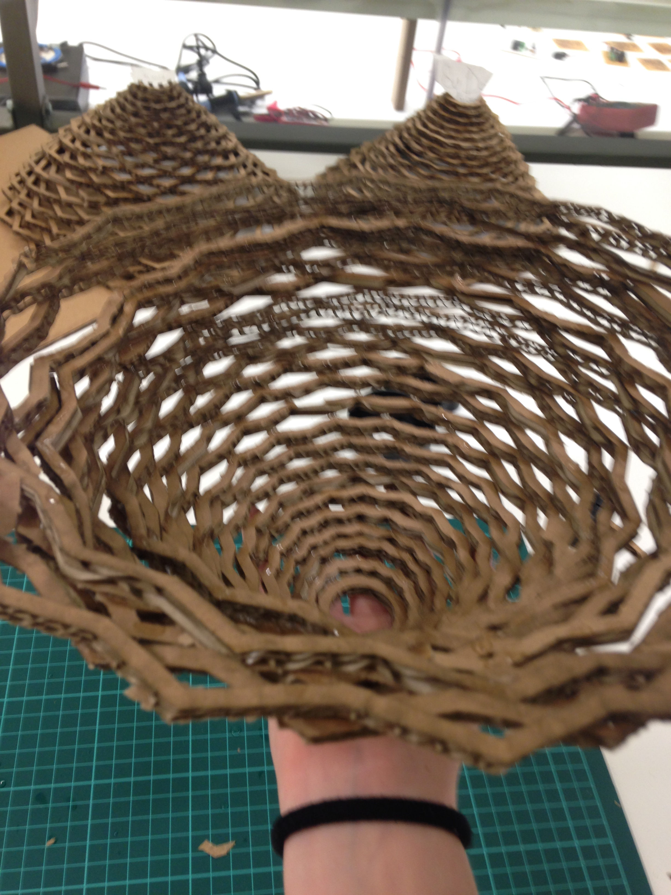

Sabah erkenden İnovasyon Merkezi'ne geldik ve Fusion360 programını açarak keşfe başladık. Uzun bir süre programı kullanmayı öğrendikten sonra sıra kendi projemizi tasarlamaya geldi. Herkes bir avize yapacaktı. Bunun için iki tane sekizgeni döndürerek biririne bağladıktan sonra bunları çoğaltarak bir desen oluşturduk. Bir sonraki adım bu modelleri bilgisayardan lazer kesiciye yüklemek oldu.
 

Lazer ile kesim yerleri belirlenmiş modelimizi alınca elimizle her deseni ayırmaya başladık. Böylece hepsini çapraz bir şekilde üst üste koyarak uhu ve kurutucu sprey yardımıyla bir avize yapabildik. Fakat uhunun çok yapışkan olması, elimizin yanmış kartonlardan siyahlaşması ve kullandığımız spreylerin parmaklarımızda kuruyan uhuyla küçük, siyah "dağcıklar" oluşturması işimizi hiç kolaylaştırmadı. Zamanında biten bir proje olmasına rağmen elimdeki uhunun iki gün daha çıkmayacağından eminim...
6 Temmuz 2017